Objectif 02
Conception, arborescence et prototypage
Groupe 9
Ahmed Mnasri et Yessine Rekik
Après le cadrage de l’objectif 01, nous avons conçu le site page par page, avant d’écrire l’application.
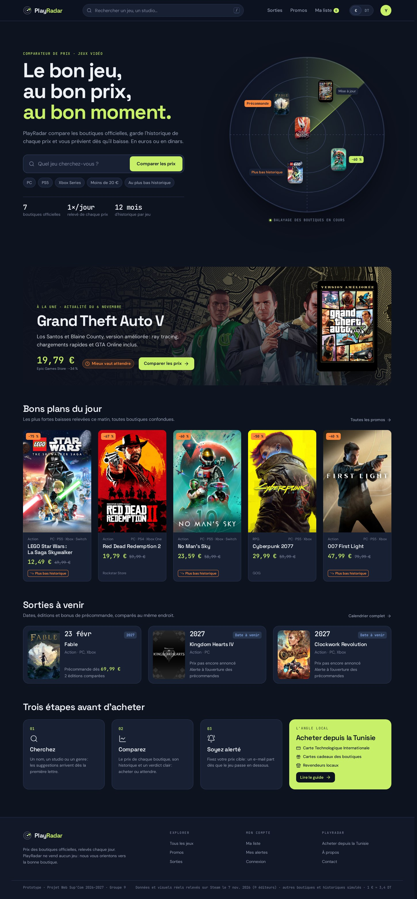
12 pages sur trois niveaux. L’en-tête (recherche, Sorties, Promos, Ma liste, € / DT) et le pied de page sont présents partout.
Trois questions de nos profils, et le chemin le plus court pour y répondre.
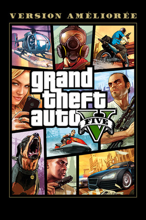
1clic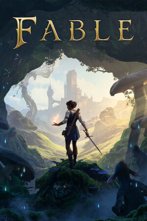
3clics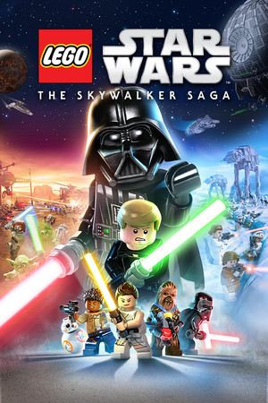
2clicsLa recherche est dans l’en-tête de chaque page, toutes les cartes de jeu sont cliquables et la fiche a sa propre sous-navigation.
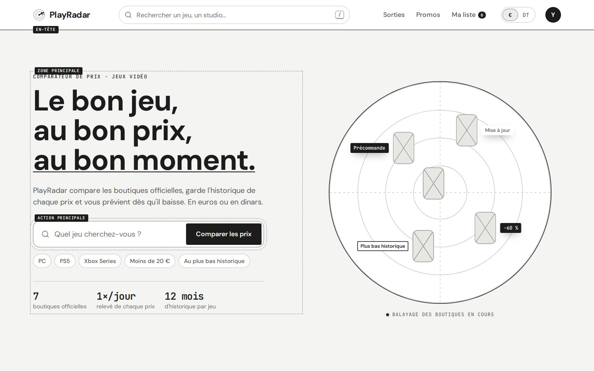
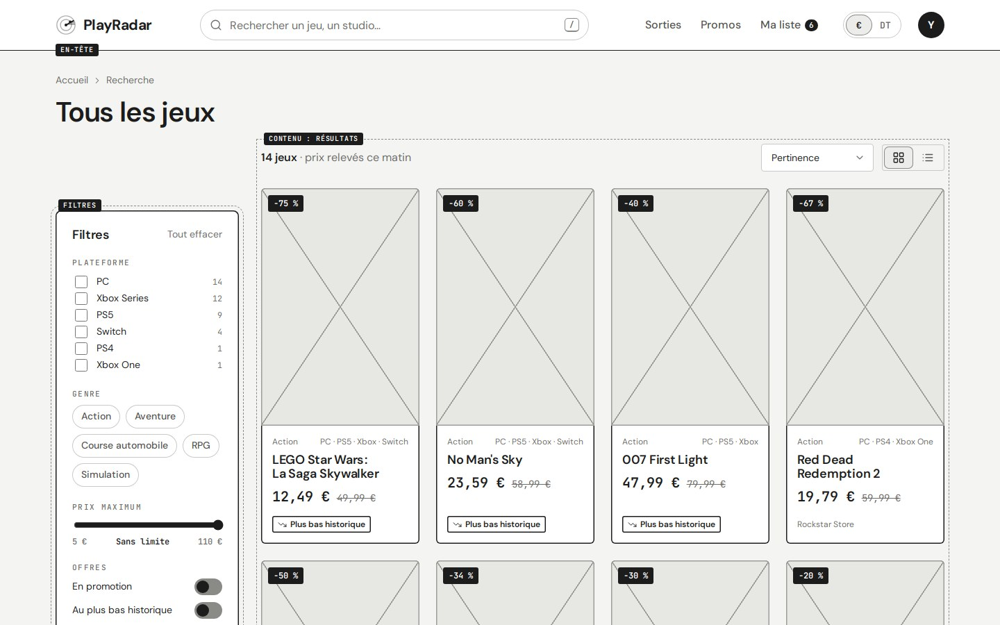
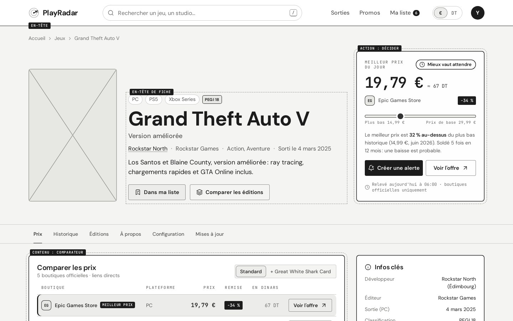
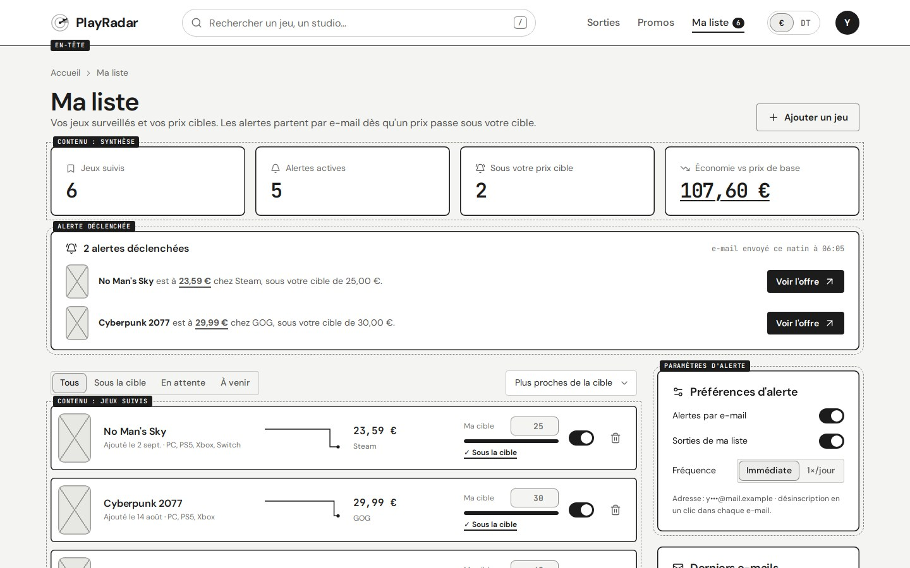
En noir et blanc, on valide la place de chaque bloc avant de parler de couleurs.
Le wireframe et la maquette partagent le même code : la touche W du prototype passe de l’un à l’autre.
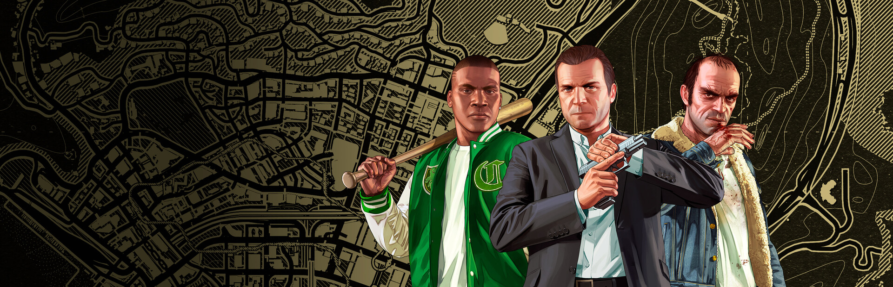
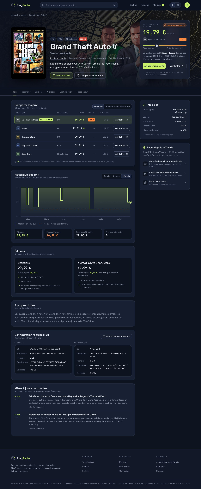
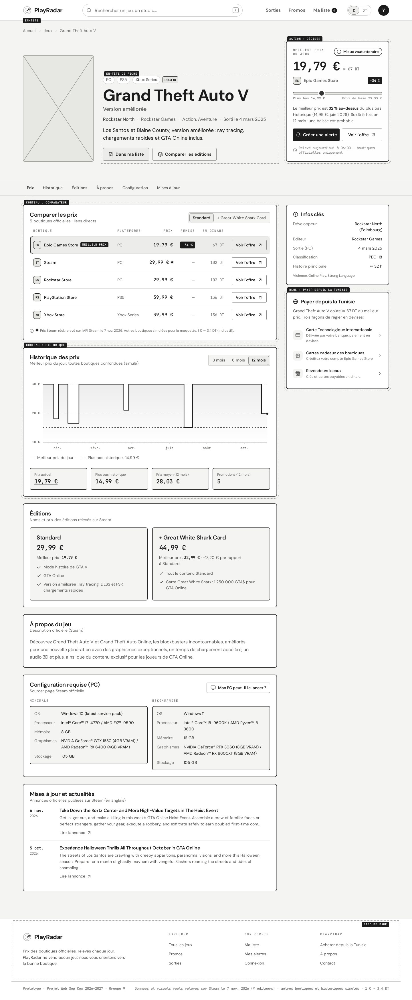
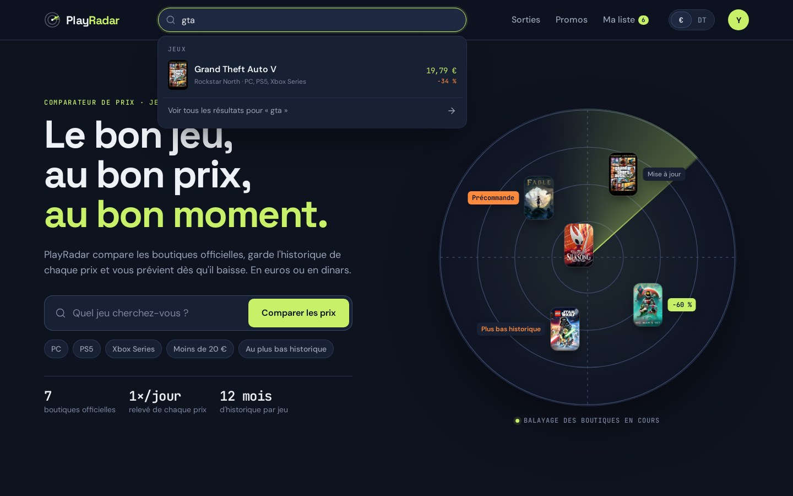
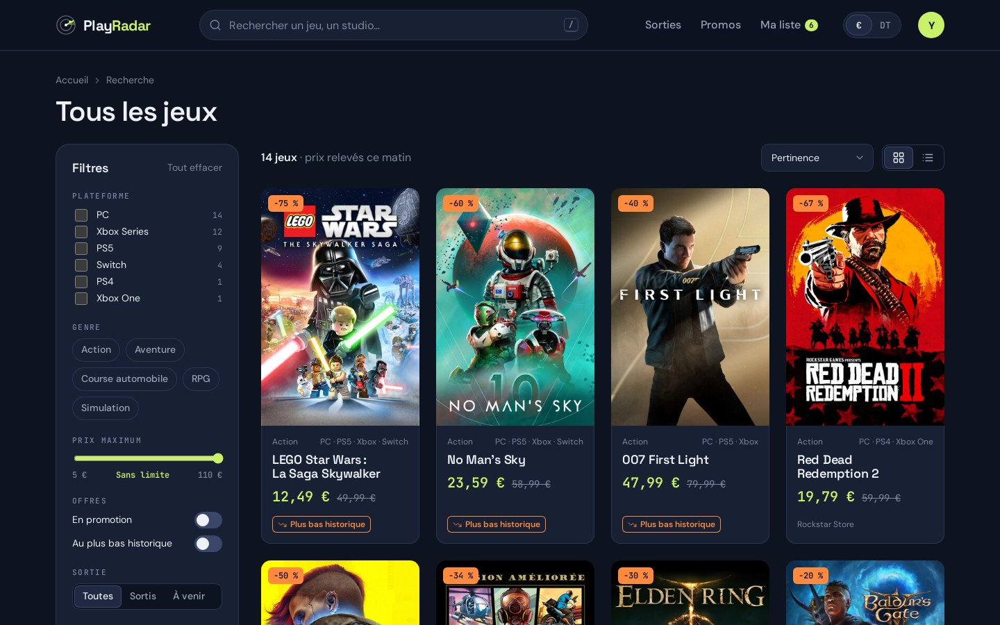
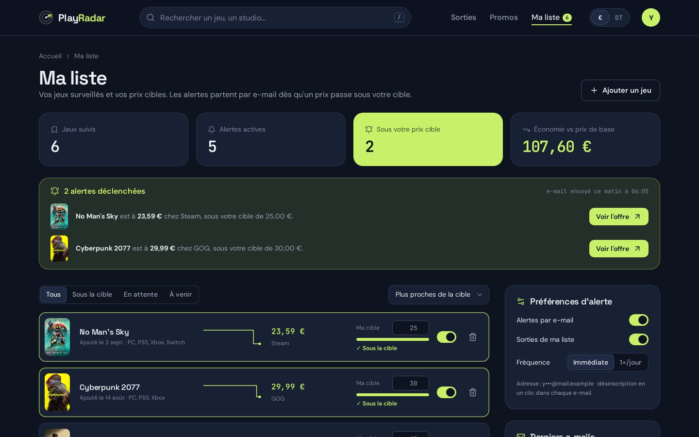
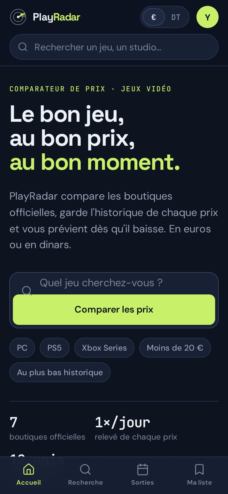
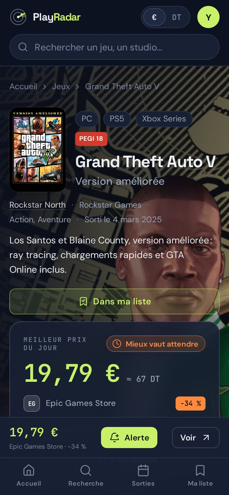
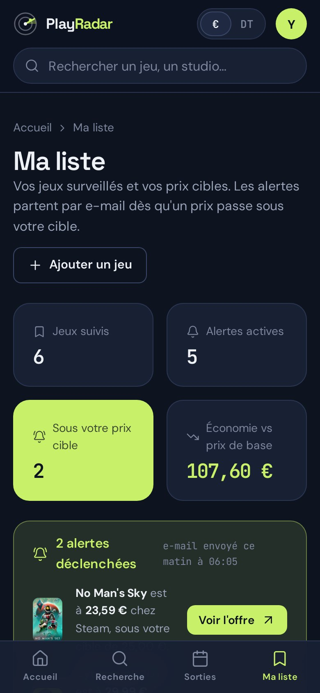
#0E1320#182033#C8F169#FF8A3D#F3F1ECLes rapports de contraste sont mesurés sur le fond Nuit.
Grand Theft Auto V
Space Grotesk pour les titres, de 24 à 72 px
Los Santos et Blaine County en version améliorée, à comparer avant d’acheter.
DM Sans pour les textes et les boutons, de 14 à 18 px
19,79 € −34 % 67 DT
JetBrains Mono pour les prix, chiffres de largeur égale
Extraits tels quels du prototype. Chaque page assemble ces pièces.
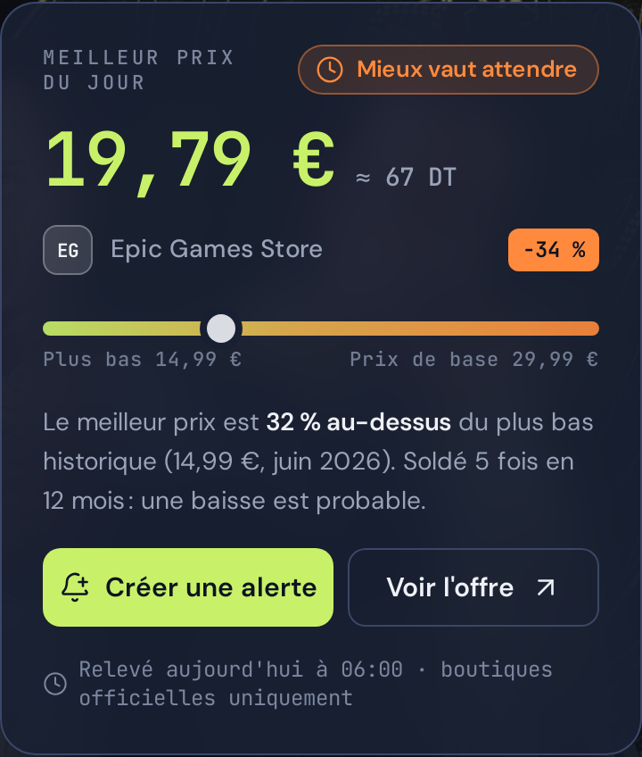
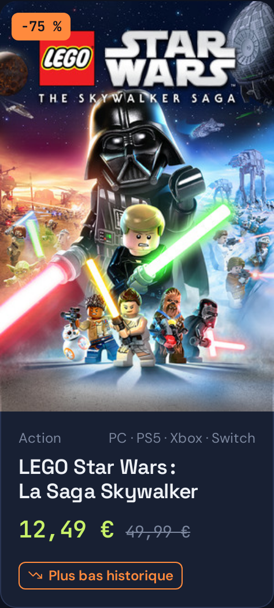
Lucide, trait de 1,75 px.
Grille de 4 px. Rayons de 6 à 20 px selon la taille de l’élément.
Un seul langage, JavaScript, du relevé des prix jusqu’à la page affichée.
Des outils répandus et bien documentés, dans un seul langage pour tout le binôme.
MicroservicesUn seul serveur Express suffit à notre trafic.
ReduxL’état reste local à chaque page.
KubernetesVercel et Render, en offre gratuite.
Chaque fichier du prototype a déjà sa place dans l’application Next.js.
La collecte est déjà prouvée : notre script lit l’API Steam et récupère titres, prix, éditions, configurations, actualités et visuels de 14 jeux, dont GTA V.
Des questions ?
Flèches ou Espace pour avancer, F pour le plein écran